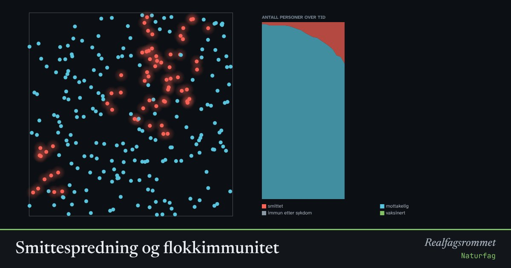

Smittespredning og flokkimmunitet
Hver prikk er en person. Røde er smittet og kan smitte andre de kommer nær. Når mange nok er vaksinert (grønne), stopper smitten opp: det er flokkimmunitet.
Start animasjonen
Formler
Om animasjonen
Blå er mottakelige, røde er smittet, grå er friske og immune, grønne er vaksinert.
Kurven viser hvor mange som er i hver gruppe over tid. Uten tiltak vokser smitten raskt i starten fordi hver syk smitter flere andre.
Når mange er vaksinert eller holder seg hjemme, møter en syk person færre mottakelige. Da smitter hver syk færre enn én annen, og epidemien dør ut. Også de som ikke er vaksinert, blir beskyttet.
Modellen er forenklet. Virkelige sykdommer har inkubasjonstid, ulike kontakter og vaksiner som ikke virker 100 %.
Prøv dette
- Hvor stor andel må være vaksinert før smitten stopper av seg selv med smittsomhet 0,6?
- Sammenlign å vaksinere 50 % med å la 50 % holde seg hjemme.
- Hvorfor er det viktig at mange vaksinerer seg, også de som selv sjelden blir alvorlig syke?
- Hvorfor flater kurven ut selv uten vaksine?
Kompetansemål
- Naturfag: Helse og livsstil, og hvor pålitelig informasjonen er
- Biologi 1: Virus, bakterier og sykdom
- Biologi 1: Vaksiner på individ- og populasjonsnivå